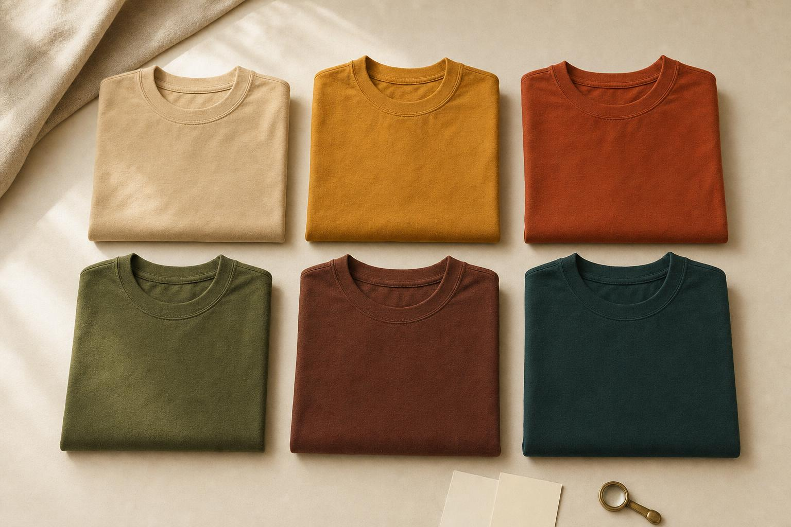
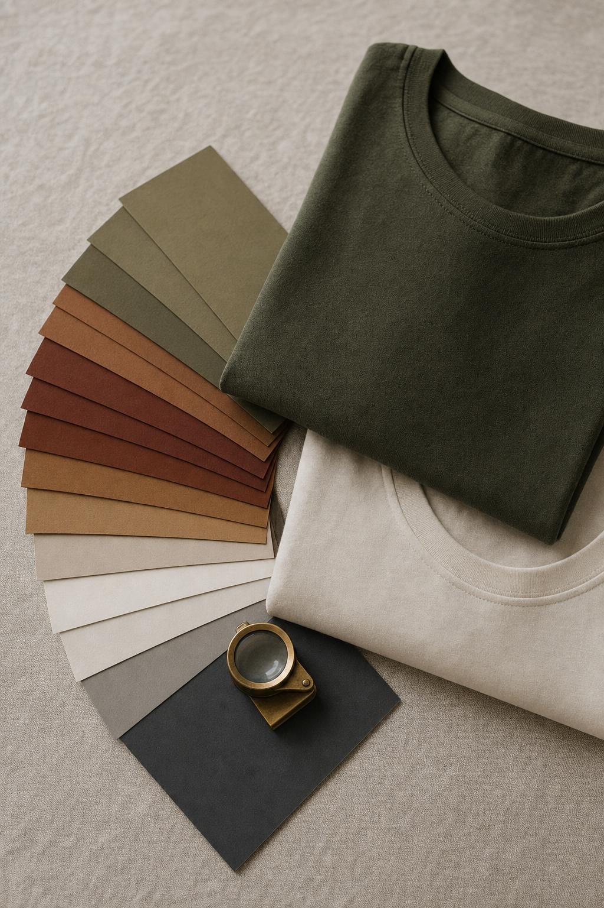
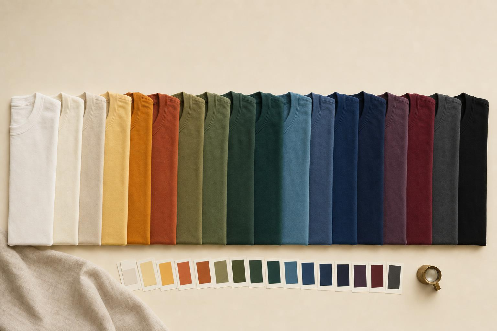
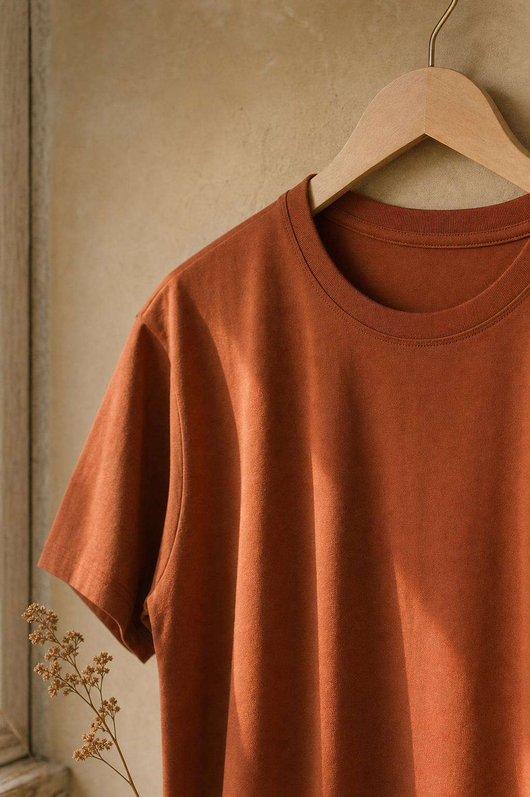
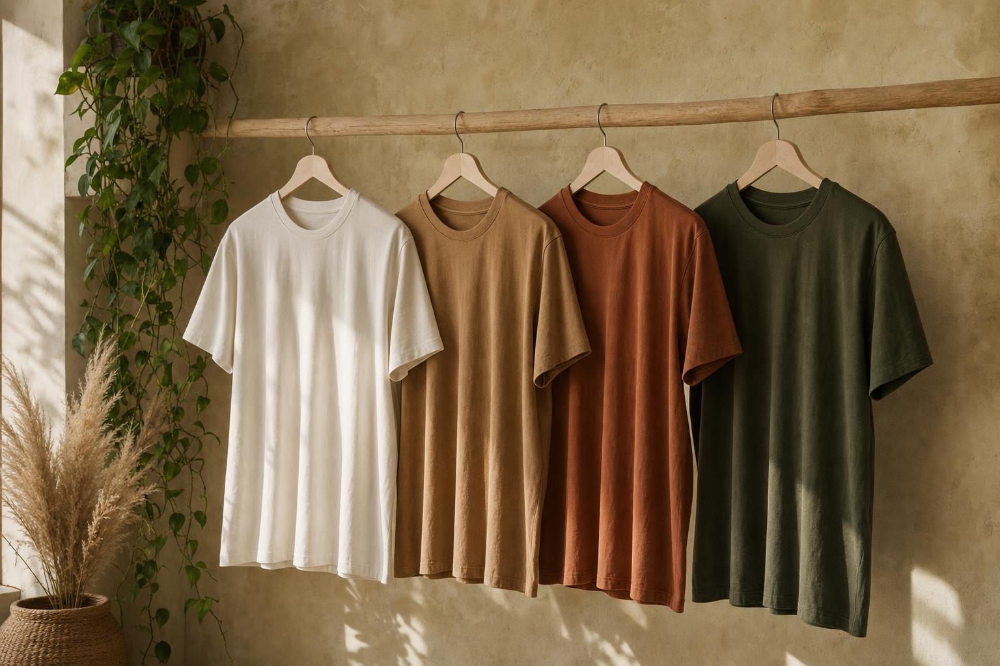
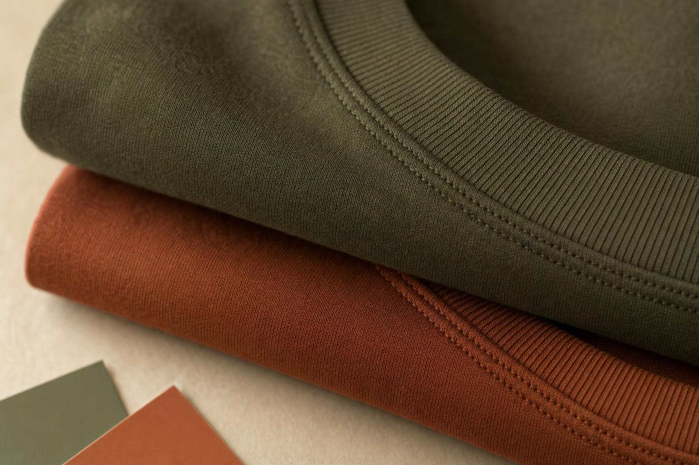

Solid-color basics from across menswear, filtered to the twelve-season palette that actually suits you. Shop your colors now — or find your season first.

Plate 01 — Hero EXT. WINDOW · 10:14Five to ten photographs. Natural light preferred, but not required. Faces visible, no heavy filters. We strip EXIF on ingest.
Each image is white-balanced against a reference chart embedded in the model. We isolate skin, lip, eye, and hair before sampling.
Your undertone, value, and chroma map onto the twelve-season grid. The result comes with the reasoning: warmth cues, contrast, the tie-breakers.
Optional: photograph the tees you already own. We tell you which are pulling their weight and which are quietly working against you.

Plate 02 — Artifact STILL LIFE · 14:22



Phone photographs are imperfect sensors. Light shifts between frames. Skin reads differently at 9 a.m. than at 6 p.m. The model corrects for this — white-balancing against a reference chart, sampling across images, weighing hair and eye against lip and iris. But the result you receive is directional, not definitive.
The twelve-season system is a useful tool. Your palette is a starting point, not a decree. Wear what you want; the catalog is here to make the starting point easier to find.
— The editors, Miami